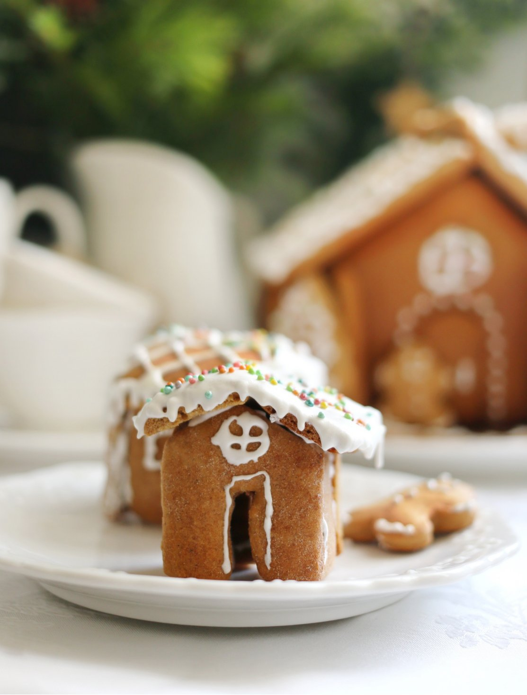

Лет десять назад у нас появилась традиция готовить пряничный домик к новогодним праздникам. Это была любовь с первого взгляда и из разряда немыслимого и волшебного. Но любую сказку можно воплотить в жизнь, хотя и придётся пройти испытания. С каждым новым разом получается легче. Да и сам процесс приготовления можно разбить на несколько этапов и растянуть на несколько дней, тогда всё кажется проще.
Этап первый: приготовить тесто. Если его завернуть и положить в холодильник, оно там может спокойно пролежать пару дней, а то и неделю. Затем надо подготовить шаблоны: вырезать из бумаги схему или купить готовые трафареты, вырубки для стен и крыши.
Следующий этап: раскатать тесто, вырезать заготовки и выпечь. Важно свежеиспечённые детали не класть на неровную поверхность, пока они горячие, могут прогнуться. Пока горячие, их легко аккуратно подрезать, при желании вырезать оконца и двери. Если же хочется сделать карамельные окна, то их лучше вырезать до выпечки и заполнить мелкодроблёными леденцами.
И завершающий этап: сборка и украшение домика. Крепить детали друг к другу можно не только глазурью (ею также можно расписать домик), но и горячей карамелью, это отличный «клей».
В тесто для пряничных домиков не рекомендуется добавлять разрыхлитель или соду, так как они заставляют тесто при выпечке сильно подниматься, детали могут потерять изначальную форму.
Вместо отдельных специй можно использовать столовую ложку с горкой готовой смеси молотых специй для пряников.